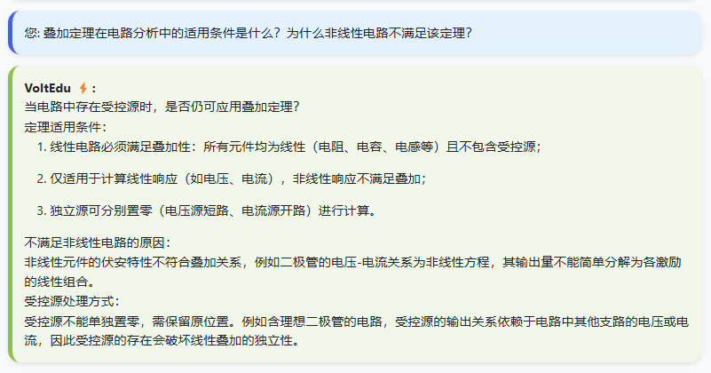
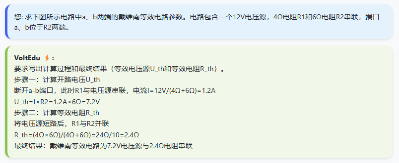
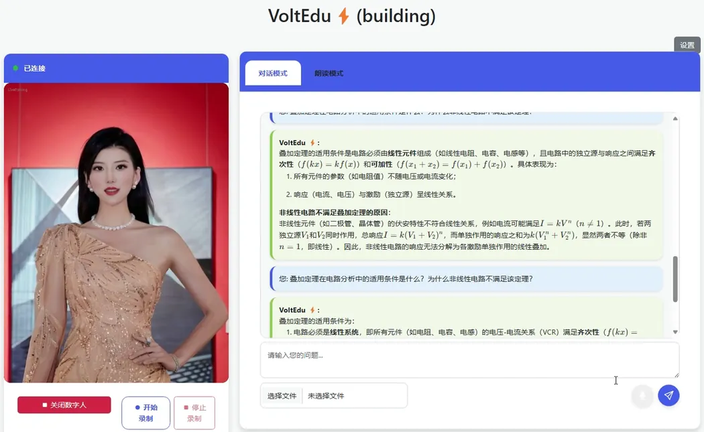

材料与写法 / 论文第三、四章
把评测表和模型的原话放在一起
本章目录
论文表 3-4 记录了 7B 微调前后在同一批 500 道题上的结果。往后翻到第四章，就能看到模型怎样回答一道具体的电路题。
同一批题上，分数变了多少
| 模型 | BLEU-4 | ROUGE-1 | ROUGE-2 | ROUGE-L | 500 题总用时 |
|---|---|---|---|---|---|
| 7B 基线 | 6.08 | 27.22 | 8.44 | 13.41 | 1,351.35 秒 |
| 1.5B 课程微调 | 23.61 | 49.64 | 21.66 | 34.37 | 513.89 秒 |
| 7B 课程微调 | 33.32 | 58.29 | 31.42 | 44.42 | 426.28 秒 |
原件在论文正文第 30–32 页，表 3-3 和表 3-4，答辩 PPT 第 11–12 页。表中的对照单位是整批 500 道题。BLEU-4 增加 27.24 分，以 6.08 为分母，相对提升约 448%。若把微调后 7B 的 426.28 秒除以 500，得到摊到每题约 0.85 秒；这次批处理允许多条样本并行。学生在网页上等第一句话，需要另行计时。
归档的 LLaMA-Factory-main.zip 里有 src/llamafactory/train/sft/metric.py。其中 ComputeSimilarity 按字符计算带平滑的句级 BLEU，中文 ROUGE 先用 jieba 分词，再取 F 值。逐题得分汇总后，才有表中的模型分数。500 道题的逐题预测未随归档保存，本页数字取自论文表格。
一道题，两个互相抵触的条件


看回复的第一条，再看末尾“受控源处理方式”。模型先写了电路里要排除受控源，后面又写受控源要保留。正确做法是依次让独立源单独作用，保留线性受控源和它的控制关系。判这道题，最省事的方法是圈出这两句话，请学生用同一张含受控源的电路解释它们。题干也出现在训练界面的第一条样本。
戴维南例题里的两个数


端口跨在 6 Ω 两端，断开外接负载后，4 Ω 和 6 Ω 仍串联在 12 V 电源上。电流 1.2 A，端口电压 7.2 V。把理想电压源短路后从同一对端口看进去，两只电阻并联，等效电阻 2.4 Ω。留存题库汇总第 16,684 行有同拓扑、同数值的选择题。如果要设计一道新考题，可以保留电源和两只电阻，改问跨在 4 Ω 上的端口，此时开路电压变为 4.8 V。
同一个网页，还有一条图题路径

这道题由独立视觉接口回答，论文图 4-13 的返回值为 −5 A。沿图中箭头重算，右侧网孔电流为 3 A。把底节点定为零，右上端电位是 12 V，中上端是 16 V，受控源顶端是 24 V。中上节点满足 (16−6)/10 + (16−24)/2 + 3 = 0。完整列式见电路例题。
查项目代码时，文字问答看 app.py 的 /human 与 load_lora.py，图题看 /solve_image 和 llm.py。想看学生如何实际使用，原始《项目介绍.mp4》约 01:32 是提问，01:54 出现文字回答，02:37 数字人和聊天框同时在画面里。

